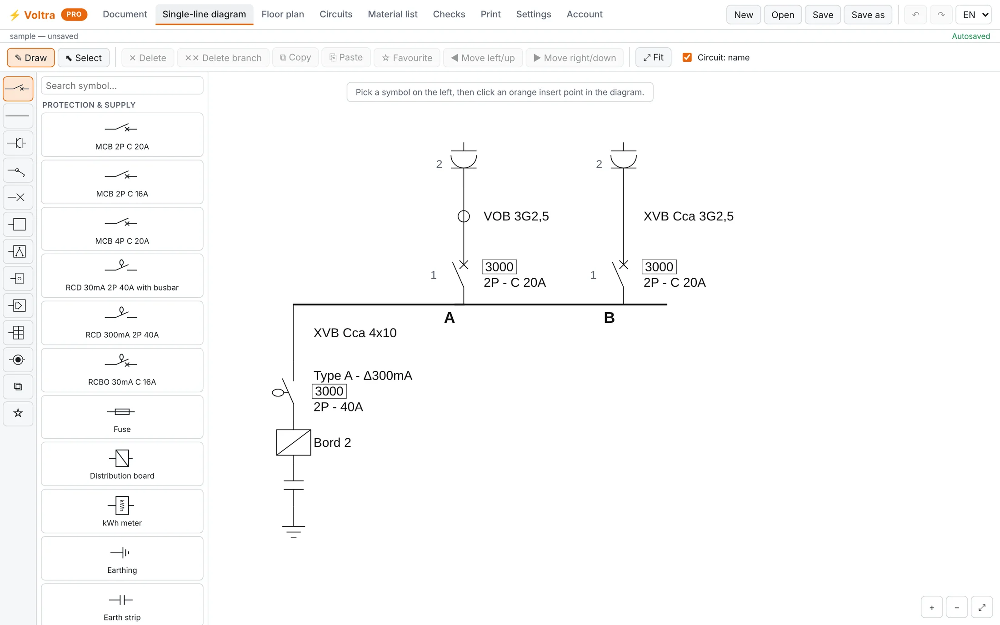
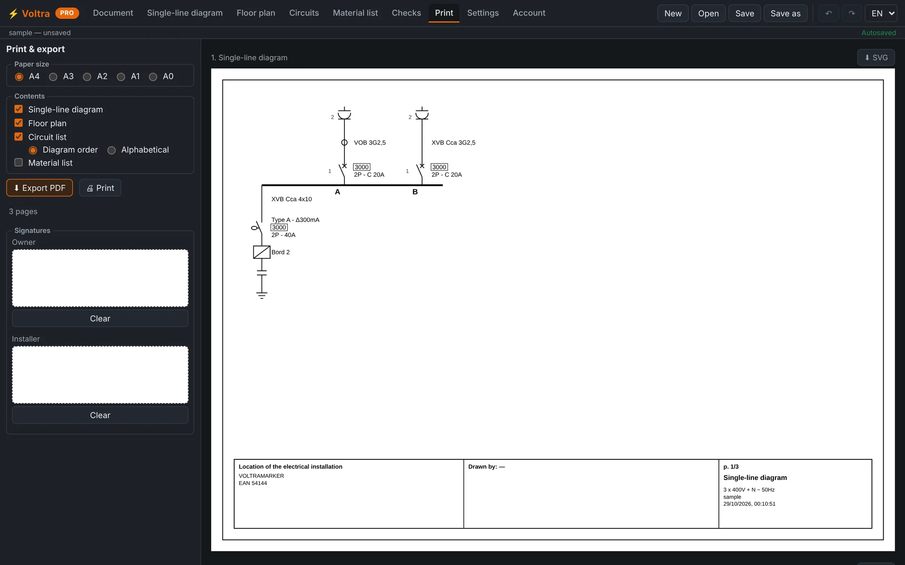

Des plans électriques conformes, dessinés en quelques minutes.
Voltra est une application de bureau pour les schémas unifilaires, les plans de situation et les listes de matériel. Elle fonctionne hors ligne, vos dessins restent sur votre ordinateur, et elle importe les fichiers que vous avez déjà — pour commencer dès aujourd'hui.
GratuitSans compte pour commencerHors ligne & privé

Conçu pour les électriciens
Tout pour le document que vous remettez à l'organisme de contrôle
Dessinez vos schémas unifilaires rapidement
Construisez l'installation depuis l'alimentation — disjoncteurs, différentiels, câbles et circuits — avec une bibliothèque de symboles pensée pour le métier.
- Des contrôles intégrés détectent les erreurs avant le contrôle
- Types de câbles, calibres et libellés de circuit sur chaque branche
- Annuler, copier, favoris — l'outil reste discret

Remettez un PDF propre, prêt pour le contrôle
Disposez le schéma, le plan et la liste des circuits sur A4 à A0 avec un cartouche en règle, puis exportez en PDF ou SVG — le document attendu par votre client et l'organisme de contrôle.
- Formats A4 à A0, multipage
- Cartouche avec les détails de l'installation et les signatures
- La version Pro retire le filigrane pour la copie finale
Une seule app, tout le chantier
Du premier symbole au document final
Schémas unifilaires
L'alimentation, les disjoncteurs, les différentiels et les circuits — comme les lisent les contrôleurs.
Plans de situation
Placez les symboles sur le plan et glissez un fond DXF ou PDF derrière eux.
Listes de matériel
Chaque symbole porte sa référence et son prix, totalisés automatiquement. Export Excel.
Contrôles intégrés
Repérez les erreurs qui font échouer un contrôle avant même d'imprimer.
Hors ligne & multiplateforme
Une vraie app de bureau sur Windows, macOS et Linux. Rien n'est envoyé en ligne.
PDF & export propres
Exportez le schéma, le plan et la liste en PDF, SVG, Excel ou CSV.
Version 1.0.0 · gratuit
Télécharger Voltra
Choisissez votre système — celui que vous semblez utiliser est mis en évidence.
Pas encore signée, votre système peut afficher un avertissement au premier lancement (Windows : Informations complémentaires → Exécuter quand même ; macOS : clic droit → Ouvrir). Vérifiez tout téléchargement avec les sommes SHA-256.
Vous changez d'outil ?
Récupérez les dessins que vous avez déjà
Voltra ouvre les fichiers dessinés dans d'autres logiciels de schéma unifilaire
belges, y compris les fichiers .trik de Trikker — le schéma, l'alimentation, le plan
et les coordonnées du client — et les transforme en document Voltra modifiable. Ouvrez, vérifiez,
enregistrez. Vos originaux ne sont jamais modifiés.
Voltra est un produit indépendant et n'est pas affilié à Trikker.
Tarifs simples
Gratuit à l'usage. Passez à Pro pour le document final.
Gratuit
- Jusqu'à 5 circuits
- 1 page de plan
- Importe vos fichiers existants
- PDF & impression (avec filigrane)
- Contrôles, tableau des circuits, sauvegardes
ou 190 € / an · HT · résiliable à tout moment
- Tout le plan Gratuit, et :
- Circuits & pages illimités
- PDF & impression sans filigrane
- Export Excel & CSV
Questions
Bon à savoir
Voltra est-il vraiment gratuit ?
Oui. La version gratuite est une app complète : dessinez des schémas et des plans, lancez les contrôles, imprimez ou exportez en PDF. Elle est limitée à 5 circuits et une page de plan, et ajoute un filigrane aux exports. La version Pro lève ces limites.
Sur quels systèmes fonctionne-t-elle ?
Windows 10/11, macOS (Apple Silicon et Intel) et Linux. C'est une app de bureau standard — si votre logiciel actuel tourne sur votre PC, Voltra aussi.
Où sont stockées mes données ?
Sur votre propre ordinateur. Voltra est une app de bureau ; vos dessins et les coordonnées de vos clients sont enregistrés en fichiers sur votre machine et ne sont jamais envoyés en ligne. Seul un abonnement, si vous en prenez un, implique notre serveur (uniquement votre e-mail et votre formule).
Puis-je ouvrir des fichiers d'autres logiciels ?
Oui — Voltra importe
les fichiers unifilaires d'autres outils belges, y compris les fichiers .trik de
Trikker, pour ne pas avoir à tout redessiner. Voltra est indépendant et n'est pas affilié à
Trikker.
Pourquoi mon ordinateur m'avertit-il au premier lancement ?
Parce que l'app n'est pas encore signée. Elle est sûre — voir la note sous Télécharger — et vous pouvez vérifier le fichier avec sa somme SHA-256 publiée.
Dessinez votre prochain plan dans Voltra
Téléchargez-la gratuitement, ouvrez un de vos fichiers, et voyez par vous-même.
Télécharger Voltra